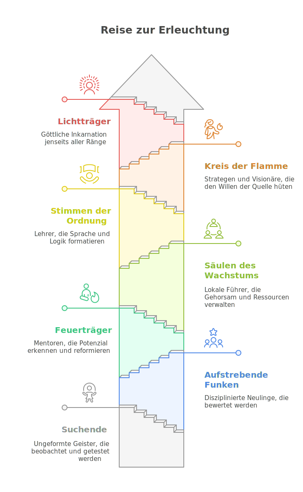

REISE ZUR ERLEUCHTUNG
PYRAMIDE DER REINHEIT

WEG DER KLARHEIT
- Aufstieg erfolgt durch Lichtpunkte, Loyalität, Spendenbereitschaft, Opfermut.
- Tägliche Protokollpflicht im Lichtjournal 2.0 (digitale App mit Biotracking).
- Aufstiege werden öffentlich gefeiert, Rückstufungen öffentlich verlesen.
- In jeder Region gibt es einen Tempel der Prüfenden Stille - dort erfolgt die wöchentliche Bewertung.